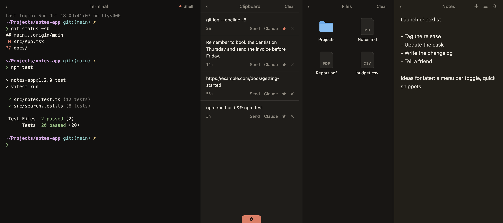
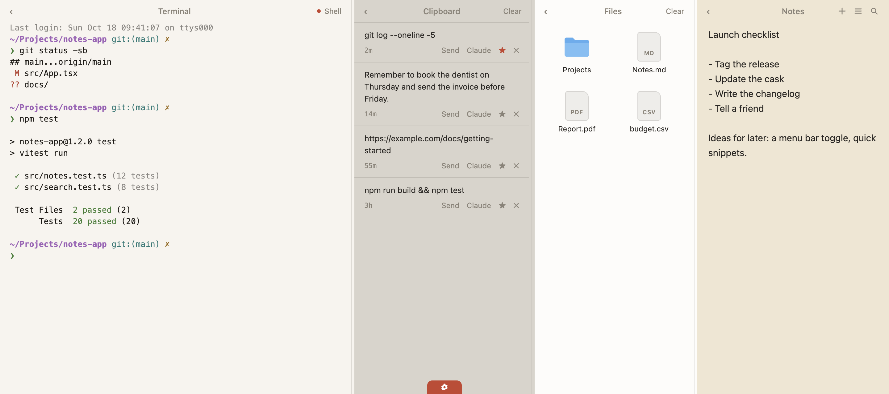

October 18, 2026 · updated October 29, 2026
Update: this app was called Perch when I wrote this post. I renamed it Pullshelf because other Mac apps already use the name Perch, and I wanted something people could actually find. Nothing else changed: same app, new name. If you installed Perch, your notes and clips move over automatically the first time you open Pullshelf. The old brew command no longer works, so use the one in the "Try it" section below.
I built a small Mac app called Pullshelf (it was Perch when I first wrote this). You pull down from the top of the screen with two fingers (or press ⌘⇧L) and a shelf slides out with a terminal, your clipboard history, a place to drop files, and notes. Let go, and it slides back up. 🪺
A friend of mine used Unclutter back in the day, and I remember how handy it looked: notes and clipboard history, always one gesture away. It was easy, it stayed out of the way, and it was a proper productivity tool. I never had the money to buy it.
That stuck with me. At some point the thought was simply: why not build one like that, and keep it open? So I did. Pullshelf is open source, and you can read every line of it.
Back then the shelf was notes and clipboard. These days a lot of my work happens in the terminal, and that's even more true now that I'm running agents and other AI tools there. So Pullshelf has two panes the original idea didn't need: a terminal (you can start Claude Code or Codex right in it) and a files shelf to park things you're dragging around. Terminal, clipboard, notes, files, all in one pull-down.


I built Pullshelf with Claude Code, with a few Claude subagents doing separate jobs (the app changes, the packaging, the website) and fresh ones checking the work afterwards. It was a very "tell it what I want, look at the result, tell it what's wrong" kind of project. It started out under the name Ledge, then became Perch, and it's now called Pullshelf (more on that at the top).
A few things broke along the way, which is the fun part:
It also has tests: 406 of them, covering all the TypeScript code, plus a script that runs the real app and checks the mouse interactions. That's the part I'm happiest I didn't skip. 😅
brew install --cask yogeshvar/pullshelf/pullshelfA few honest caveats: it's not notarized by Apple (I don't have a developer account), so the first launch needs a manual "Open Anyway" in System Settings. It's Apple Silicon only, macOS 13 or newer, and the pull gesture needs Accessibility permission. The details are on the Pullshelf site, and the code is at yogeshvar/pullshelf.